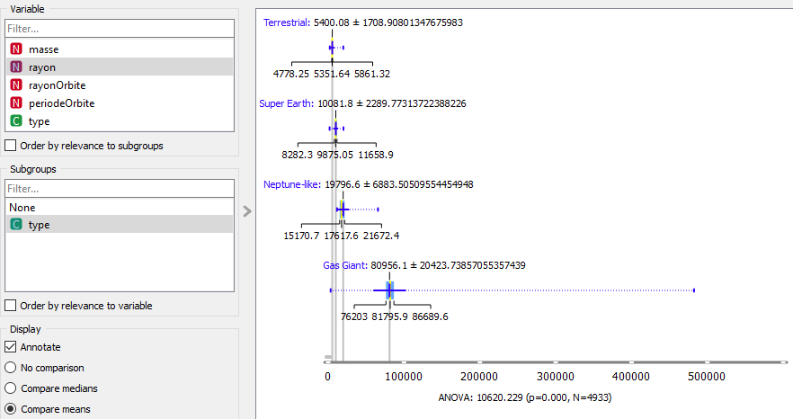

FunFact !!
Masse en fonction du type
Blabla Masse en fonction du type
Rayon en fonction du type
Blabla Rayon en fonction du type
RayonOrbite en fonction du type
Blabla RayonOrbite en fonction du type
periodeOrbite en fonction du type
Blabla periodeOrbite en fonction du type
Funfacts 1:
La planète COCONUTS-2 b possède un rayon d’orbite autour de son astre de 7506 unités astronomiques (1 unité astronomique = 150 millions km, soit 6255 fois le rayon d’orbite de la Terre !!!!), et donc elle effectue un tour de son astre en + 1 million d’années ! OMGMGMGMGMG wtf babawwwwtewlewphowne
Funfacts 2:
La planète HD 100546 b est la planète la plus grande de notre dataset, avec un rayon de 482386 km, soit 6.9 fois plus grande que Jupiter et 75 fois plus grande que la terre !!!! oh my goodness gracious !!!qsqsqdqdqdqsdqdqqsdq Elle est presque aussi grande que notre soleil qui lui possède un rayon de 696340 km
Funfacts 3:
La planète K2-52b possède une masse de 45792 masses terrestres !! elle est 144 fois plus massive que Jupiter !!!!! what do hell
Funfacts 4:
La planète PSR B1257+12 b possède la plus petite masse de notre dataset elle pèse 1/50 de la masse de la Terre oh hell nawww
Funfacts 5:
La planète Kepler-37 b est la plus petite de notre dataset, elle possède un rayon 3 fois plus petit que la Terre heheheha
Funfacts 6:
La planète K2-137 b possède un rayon d’orbite 300 fois plus petit que la Terre, elle effectue un tour de son astre en 0.00055 année, soit 4 heures et 48 minutes !!! whatttt do hell oh hell nawwwwwwwwohohohohoh